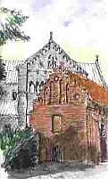

Der freche Ratgeber:
Sparsam Sanieren
(Buch/eBook)
Vertrauens-Umfrage
u.a. Leser-Umfragen
Ihre Stimme zählt!
                                                         Aktuelles
Kultur / Historie Planungstechnik Vergabetechnik Bautechnik Baufinanzierung B a u p h y s i k Vermischtes Stellensuche? Wunder/Märchen Dies&Das Suche/Search D e r A u t o r
|

Dedikation/Widmung
A k t u e l l e s
Konrad Fischer im TV
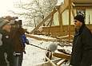
Halleneinstürze:
BR3 Quer 26.1. + 9.2.
2006 20:15; Pressetalk
m. FOCUS, SZ, BYAK
München TV 9.2. 20:00

Talk-Clip wmv 2,9 MB

ARD-Kulturreport 22.11.01:
Vom Schloß zur Ruine
ARD-Globus 3.4.02:
Lichtenfelser Experiment:
"Zwang zum Energiesparen:
Pfusch am Bau?" (Mitschrift)
ARD 8., 3sat 21., NDR 27.
rbb 29.5.04:Ratgeber Bauen
WDR 14.5.04: ServiceZeit
Fensteraustausch? mit dem
ift Rosenheim + K. Fischer
Die Homepage-CD
Kultur / Historie
Bildklick Beaujolais:
Museums-+Kultur-Info
Museums-Quiz
FLMus. Ballenberg
Kulturmanagement
Denkmalpflege
Denkmalpflege?
Denk mal, Pfleger!
Denkmalzerstörung
Denkmalvorträge
Bau-"Forschung"
 Geschichte
Geschichte
Kirche/Kloster
Mond+Jesus

Burg/Schloß
Schloß zu verkaufen
Wissenschaft
Literatur/Quellen

Das Baudenkmal

Planungshilfen
Planungsmethodik
Sanierungsratgeber
Beispiel Altbau-
und Planungskosten
DIN - ein Muß?
Der klassische Bauherr
Der Herrscher am Bau
Reparatur
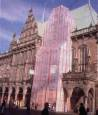
Beispiel Musterachse
Beratungs-/Infolinks
DBV-Praxis Ratgeber
Tragwerk/Statik
Brandschutz
Die BMA-Falle
Altbau-SiGeKo/-Plan
Haustechnik
Haustechnik+Denkmal
Heiztechnik
HOAI ja oder nein?
HOAI-Mißbrauch
Honoraranfrage
HOAI-Mindestsatz-
unterschreitung/VOF
|
Bauherrnbeschiß Planer einsparen Planlusche finden Luxusplanung Pfuschplacement Kostenexplosion Vergabeschwindel Handwerker-Quiz +Planer-Quiz für Schlaubauherrn  D sucht d. Super-Planung |
Vergabetechnik
Angebotsvergleich
Angebot vom Bieter
C A D / A V A
GU-/GÜ-Vergabe?
VOB/A im Bestand
Wie Beschreiben?
Ausschreibungs - Schwindel
Bautechnik 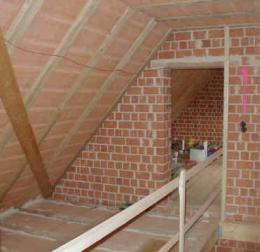 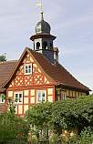 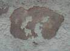 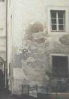 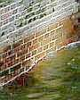 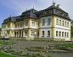 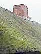 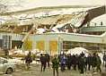
Baustoffe/Verfahren
Massivbau total?
Fertighaus-Pfusch?
Fachwerkliebe/sünden
Deklarationspflicht?
Reparaturtechnik
Kalk-Geheimnisse
Kalkputz-Fehler

Natursteinsanierung
Anstrichsanierung
Fachwerk/Fußboden
Holzschutzgifte
Holzschutz giftfrei
Holzschutz/-anstrich
Baugrund mies?
Aufsteigende Feuchte?
Kap. 1 2 3
4 5 6
7 8 9
10
11 12 13 14
15
Feuchte + Salz
Rising Damp - a Hoax?
Mold / Mould Attack
Kaputt- u. Totheizen
Bautrocknung

Bautemperierung Kap.
1 2 3
4 5 6
7 8 9
10 11 12
13 14 15
16 17 18
19 20 21
22 23 24
25
Schloßtemperierung
Die Heizkessel-Falle
Murks + Pfusch
"Sanier"-Putz
Betonversagen
Zementkrankheit
Nasse Dächer
EinstürzendeDächer

Balkonsanierung
Flachdachlachen
Ausschreibungs-Falle
Wärmedämmung?
Der Schwindel mit
Wärmedämmung
Kap. 1
2 3 4
5 6 7
8 9 10
11 12 13
14 15 16

Schimmelpilz I
Schimmelpilz II
Fenster oder Lüftung?
Wohngifte
Dachausbau?
Translozierung/Relocation
Ihr Problem
Baufinanzierung
Baugeld + Zuschuß
Sparsam bauen
(mit Fotos + Zeichnungen)
Finanzierung durch Planung!
Sinnvoll investieren
Geld rausschmeißen
Problem:
Förderrichtlinie
Brandopfer
Kostenexplosion II
Museum+Kommerz
B a u p h y s i k 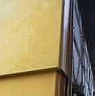 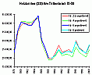
Energiesparen und
Wärmeschutz? Kap. 1
2 3 4
5 6 7
8 9 10
11 12 13
14 15
16 17 18
19 20 21
Eis auf WDVS
Richtig Lüften
Richtig Heizen
Altheizung KO/OK?
Heizkostenvergleich!!

Dämmt Dämmstoff?
Lichtenfelser Experiment
Korrektur v. Prof. Gertis


k-/U-Wert-Narretei
NEH-Passivhausbluff
Professoren - Rätsel
Initiative Gutes Bauen
Prof. Meiers Seite (hier)
(bei Heck)
FEWB e.V.
Einsprüche:
DIN 4108
Teil 2 Kurzfassung
Fiktive Bauphysik
Teil 3
EnEV
AK RLP/H <> BAK
Verfassungswidrig?
Petition 1 an Bundestag
Petition 2 (Arch.Schwan)
Treibhausgashandel
EU Klimabeschiß
Vermischtes
Stellensuche/Job?
Gut-+Schlechtachte
Kunden-Irreführung
Problem: Behörden
Die Klimalüge
Umwelthysterie
Doof bleiben 2000+?
Webtips f. Anfänger
Kinder-Fliesen!
Ein alter Baumeister
Mord+Totschlag
Neu: Neotyrannis
Wunder / Märchen:
Gutnacht-Mär z. Geld
Globale Erwärmung
Risiko CO2
Versiegende Energiequellen?
Guter Naturstrom
Dies&Das

Dies + Das
Suchen/Search
Meine Seite
- Inhalt/Sitemap
- Aktualisierungsinfo
Handwerker
Wer bin ich?
Ihr Kommentar:

Stop transferring your visit data to Google by a Opt-Out-Cookie - click!: Stop Google Analytics Cookie Info. Datenschutzerklärung

In memoriam
Mein Mann ist im Oktober 2018 einem Krebsleiden erlegen. Daher möchte ich als seine Rechtsnachfolgerin die Erinnerung an sein profundes Wissen in Bezug auf Baustoffe, Heiztechnik, strukturierte Bauplanung von Denkmälern und vielem anderen erhalten.
Er hat sich stets für eine gesunde, ökonomische, klimaverträgliche Bauweise eingesetzt und wurde für viele Bauherren zur Rettung.
Die Homepage dient ausschließlich Informationszwecken, ohne Gewähr.
Architektenleistungen, wie Bauberatungen, können nicht mehr erbracht werden.
Möge die Homepage noch für viele Menschen zum Segen werden!
Altbau und Denkmalpflege Informationen
Das Architektur-Magazin zum Planen und Bauen im Bestand
Impressum/Masthead/Kontakt/Contact
 Herzlich willkommen
Herzlich willkommen
auf der Altbau-Homepage rund um die wirklich sparsame Reparatur, Instandsetzung, Modernisierung und Sanierung,
zu Baupfusch und Energiesparschwindel
>> Inhalt / Content / Sitemap / Suchen / Search - Seminare/Vorträge
>> Home - Gästebuch / Guestbook <<
|
Ein Gästebucheintrag: "Leider habe ich Ihre Homepage viel zu spät für mich entdeckt, aber früh genug, um noch andere Bauwillige über eine andere (Bau)Welt zu informieren. Als Bau-Laie sehe ich mich 2 Lagern gegenüber, wobei ihre Argumentationen in sehr vielen Fällen überzeugender und nachvollziehbarer als die der Bauzeitschriften und Firmen wirken. Viele Informationen sind auch sehr gut und einmalig." K.S. aus G. Ein Beratungskunde: "Damals gehörte ich auch noch zu den Menschen, die bei der Sanierung alles, auch wirklich alles machen wollten, was die Industrie und Politik uns vorpredigt, und das obwohl ich mich als rational und vernünftig denkenden Menschen einstufte. Dann jedoch kam der Supergau und ich stieß auf Ihre Homepage. Das war wie ein Schlag direkt ins Gesicht. Alle meine Überzeugungen sollten auf einmal Falsch sein. Nach einigen durchlesenen Nächten bestätigte sich das Schlimmste. Ich hab auf die Gehirnwäsche der Industrie und Politik angesprochen." M.H. aus K. Bauhandwerk 10/2004: "konrad-fischer-info.de gehört inhaltlich zu den besten Adressen zu den Themen Altbaumodernisierung, Sanierung und Denkmalschutz. Ziel ... ist die Vermittlung des nötigen Know-hows. um Altbauten kostensicher und sparsam zu reparieren. In teilweise radikalen Formulierungen werden ebenso ungewöhnliche wie interessante Thesen vertreten." |
Warum dieses Informationsangebot?
- Vergiftung und Verwandlung des Bauwerks in Sondermüll durch normgerechten Holzschutz
- Unverträgliche hydraulische und/oder synthetische Beschichtungen, die den Bestandsuntergrund über kurz oder lang zerstören und als Wasserreservoirs Schimmelpilz und sonstige Schädlinge heranzüchten
- Zerstörerische und wirkungslose Eingriffe wie Standardverfahren zur "Mauertrockenlegung" oder "energetischen Sanierung"
- Technisch und wirtschaftlich sinnloser Austausch reparaturfähiger Baukonstruktionen und Anlagentechnik wie beispielsweise Fenster und Türen, Bestandteile von Wasser- und Abwassersystemen und Heizungsanlagen, aber auch Mauerwerk, Putze, befallene Holzteile, Dachziegel, Fußböden
- Maßnahmenmaximierung und Substanzzerstörung aller Art ohne Rücksicht auf den Nutzen und Bauherrnbeutel mit logischerweise allergünstigsten Effekten für die Gewinnmargen aller Baubeteiligten
Weil die kostensichere und sparsame Altbaureparatur im Internet zu kurz kommt:
Normen, Gesetze und Baustoffreklame im Web nutzen ja nichts, wenn sie ohne Bezug zum Altbau bleiben. Das Ende vom Lied kennen wir vom ELektrohändler: "Batterie kaputt, Reparatur lohnt nicht, Neukauf!" Für das Ausradieren vom Hinterhof bis zum Altsatdtquartier gibt es die Abwrackprämie der Städtebauförderung, was dem aktuellen Geschmack des Denkmalpflegers nicht gefällt, wird mit seiner Förderung entmüllt.
Der sparsame Nutzwert der werbefinanzierten Baumagazine und des üblichen Denkmalglanzlobpreises hilft da nur wenig weiter. Auch der Altbauherr wird ja nur aus Schaden klug. Und wer verrät ihm schon, ob modernste Bauprodukte vielleicht sein Geld, seine Gesundheit und seine Bausubstanz vernichten und auch die finanz- und bautechnischen Denkmalkatastrophen vom Kopf her stinken können. Wobei der klägliche Ruf nach besserem Handwerk, allgegenwärtiger Bauüberwachung und beschränkter Vergabe das wahre Problem nur vernebelt. Der Hund liegt woanders begraben:
Planungsfehler und Eigennutz nagen am Bauherrnbeutel und Bauwerk. Sie programmieren so vor, was niemand (?) will: Geld- und Substanzzerstörung, vielleicht sogar Behörden- und Planerkorruption. Geht es beim Autokauf beispielsweise um Marke, Zylinder, Hubraum, Verbrauch, Lackierung, Sonderausstattung, Wiederverkaufswert, soll beim Bauen oft der profilloseste Plattreifen genügen. Genügen lange Listen mit schon geleimten Kunden als Eignungsbeleg, wenn nur ein Nachlaßschnäppchen winkt? Wird schon gutgehen? Wie oft bekommt der ahnungslose Bauherr vom Experten "Neues Dach, Totaldämmung, neues Heizsystem, Bohrlochinjektage oder Mauersäge, Betonplatten rauskoffern, Wandputz abhacken und Sanierputz drauf" für 100.000 aufwärts verordnet, obwohl bisserl reparieren durchaus gereicht hätte, um dem kranken Patienten wieder neues Leben einzuhauchen? Selten oder immer?
Die ökommunistisch gleichgeschaltete Politik macht vor dem Bauwesen leider nicht Halt. Die "Klimawissenschaft"
im Gewand der Hofastrologie produziert erst den Klimaschwindel - zugunsten einer
erbarmungslosen CO2-Diktatur mit Öko-Scharia. Strafbewehrte Zwangsverordnungen namens EEG,
EEWärmeG, EnEV, Feinstaubverordnung usw. verfolgen in sich immer mehr überschlagenden Novellierungszyklen
angeblich wohlwollende Weltrettungs-Utopien unseres Tugendterror-Regimes und pressen doch eigentlich nur dem
wehrlosen Bürger das nicht vorhandene Geld aus der Tasche. Bei gleichzeitig zunehmender Einschränkung seiner
einst grundgesetzlich verbürgten Freiheiten und Mobilität. Unerbittliches Endziel der Ökommunisten: Abschaffung
des Privateigentums. Die Familie wird nebenbei mit erledigt. Und die Kirchen? Sie machen freilich wieder gerne
mit, wenn es draum geht, staatlichen Zwang gegen die Freiheit durchzusetzen.
Unsere staatlichen und privaten Altbauten - einst mal gut und massiv gebaut - gehen bei all dem Klimaschutz vor
die Hunde.
 Die Bauindustrie - anstatt verbraucherfreundlich gute Produkte preisgünstig zu produzieren und zu vermarkten -
jagt lieber dem Quartalsumsatz hinterher wie der Teufel der armen Seele und schreckt dabei weder vor der
Bestechung des Gesetzgebers, seiner Administration und des verantwortlichen Planers, geschweige denn vor dem
Einsatz von allerlei Giftmüll in krankmachenden Bausystemen zurück.
Die Bauindustrie - anstatt verbraucherfreundlich gute Produkte preisgünstig zu produzieren und zu vermarkten -
jagt lieber dem Quartalsumsatz hinterher wie der Teufel der armen Seele und schreckt dabei weder vor der
Bestechung des Gesetzgebers, seiner Administration und des verantwortlichen Planers, geschweige denn vor dem
Einsatz von allerlei Giftmüll in krankmachenden Bausystemen zurück.
Auch so mancher Handwerker hat sich als Ökomafiosi dummerweise (er ist ja kein Kopfwerker) dem Fürsten dieser
Welt verschrieben und läßt sich für jede Benachteiligung seines "Auftraggebers" eine wohlfeil-satanische Ausrede
ins Ohr einblasen.
Und gerät der Bauherr auf der Suche nach seinem guten Recht an den Juristen, den Gerichtsgutachter, den ö.b.u.v.S.
oder gar einen "Holzschutzsachverständigen", kann er doch hin und wieder erleben, wie auch derlei "Experten" nur
den eigenen Vorteil suchen und das Hereinlegen und Auftragsmehren in eine unfaßbar dumm-dreiste oder auch
raffinierte Rhetorik verpacken. Der "Endverbraucher" bleibt dabei auf der Strecke - als Kunde früher der "König"
- wird er heute von "den Profis" zumindest an den Bettelstab, wenn nicht gleich um den gesunden Menschenverstand
gebracht.
Diese Webseite will eine Gegenstimme sein zur allseits betriebenen Menschen-, Seelen-, Bau- und Geldzerstörung,
zur abartigen Baupropaganda im Verdrängungskampf auf dem Schlachtfeld "Baumarkt". Saftige Seitenhiebe
und unerträgliche Provokationen inklusive. Aus Liebe zum Menschen und menschengerechten Bauen.
Schon viel zu lange hat das Industriemarketing die Interessensgegensätze zwischen Bauherr und Architekt, zwischen Architekt und Fachingenieur und zwischen all diesen und dem Handwerk mißbraucht, um die eigenen Umsätze zu maximieren. Hierin liegt die Begründung vieler falscher Normen und Bauregeln, die dann unsere Administration in grottenfalsche Bauvorschriften ummünzt. Die damit pervertierte Baukunst gebiert Bauschäden ohne Ende, das nicht mehr mangelfrei abnehmbare Bauwerk als neuen Standard. Ein gleichsam unsterblicher Goldesel für Sachverständige und Advokaten und Garant gesundheitsschädlichster Raumklimata.
Das offenste Scheunentor für solchen Pfusch: Produzentenseitige Umsonstplanung und gewisse Aufmerksamkeiten für den vielleicht unterhonorierten Planer im Schwarzkittel, die schärfste Waffe des im Pharmabereich bei den Halbgöttern in Weiß erprobten Produktplacements (SZ am 20.10.06: Ulrich Schwabe, Herausgeber des Arzneiverordnungsreports: "die Ärzte (verschreiben) verstärkt teure Medikamente, die wenig nützten ... weil die (Firmen der Pharmaindustrie) die Ärzte beeinflussen ... (deshalb) müsste es verboten werden, dass manche Mediziner am Umsatz der verschriebenen Präparate beteiligt seien." Oha!). Auch über den Umweg des von seinen baustofflichen Grundlagen entfremdeten Handwerkers, der mehr und mehr zum Außendienstler der Baustoffproduktion entartet. Die Umsonstplanung verpflichtet dann, Aufträge zuzuschanzen und Wettbewerb auszuhebeln, ermöglicht produzentenorganisierte Bieterabsprachen. So verkommt auch im Altbau die Bauwerksreparatur zur Bauwerksbeschädigung. Nur weil das planerseitige Baustoff- und Konstruktionsverständnis nicht ausreicht, zeitaufwendige Auseinandersetzung mit dem Bestand nicht nachgefragt wird und ständig neue Baustoffe mittels firmenseitiger Umsonstplanung "auf den Markt drücken" - gerade auch im Schlüsselfertigbau. Was im Medizinbereich als "arztempfohlener" Einsatz überteuerter Medikamente ohne jeden Mehrwert und Nutzen für den Patienten wohlbekannt ist, und nach dem Motto "Das bist Du mir wert" scheinheilig an den Kranken gebracht wird (dafür nimmt der Arzt bestimmt gerne die so ach bittere Medizin der Kassenabzüge in Kauf, wenn er sie durch die begünstigte Pharmabranche in anderer Weise so honiggleich versüßt bekommt), gibt es auch an der Baufront. Also:
Das Architektur- und Bau-Magazin "Altbau und Denkmal Informationen" bietet aus Sicht einer bestandsorientierten Planungserfahrung und Baupraxis Aufklärung und Kritik.
So können Sie sonstige Bauinformationen und die Produktpropaganda besser nutzen, Geld- und Substanzverluste vielleicht sogar vermeiden. Die Auswahl der kontextsensitiven Google-Werbung auf diesen Seiten entscheidet übrigens ganz alleine Google, ihr Erscheinen auf diesen Seiten bedeutet keine Empfehlung durch mich, es gibt keinerlei direkte wirtschaftliche Verknüpfung zu den Werbenden. Oft stehen die Werbelinks ja im geradezu absurdesten Gegensatz zu den Inhalten hier. Doch warum sollte uns das stören?, ist doch jeder seines Glückes Schmied! Insofern bildet eine allseitige, unabhängige, unzensierte, freie, kritische, skeptische und manchmal auch humorige Information die Grundlage dieser buntest gemischten und zugegebenermaßen etwas "unübersichtlichen" Webseiten.
Denn eines ist sicher:
'Eens Manns Red´ ist keens Manns Red´ - man muß sie hören alle beed'
bzw.
'AUDIATUR ET ALTERA PARS'!
Und bedenken Sie:
"Was die Schriftsteller schreiben ist ja nichts gegen die Wirklichkeit. [...] Die Wirklichkeit ist so
schlimm, daß sie nicht beschrieben werden kann." (Thomas Bernhard, Heldenplatz, 1988)
| Kritik? Kritik! Elke Heidenreich (EH) und Marcel Reich-Ranicki (MR) im Interview - Neue Presse Coburg am 7.10.2006 (Auszug): "LEST! ... MR: ...Ich werde ganz klar und deutlich schreiben. Es gibt zwei Möglichkeiten: Ich lande in der Hierarchie ganz unten oder ganz oben. Es ist riskant. Ich habe es versucht. EH: Wenn man so arbeitet wie Sie und ich, hat man eine Menge Feinde. MR: Wenn Sie keine Feinde haben wollen, hätten Sie Steuerberaterin werden sollen. Kritiker haben immer unzählige Feinde. EH: Da ich nun eine Menge Feinde habe, habe ich mich entschlossen, diese Feindschaften zu genießen. Dann macht es Spaß. MR: Sie haben Feinde und Gegner. Aber Sie haben auch sehr viel Zustimmung. Die Leute sind Ihnen dankbar, vor allem, weil sie Sie verstehen. EH: Es geht bei unserem Beruf ja darum, Leute zum Lesen zu bringen, die ... diesen Markt mit 80000 Neuerscheinungen nicht richtig überblicken. ... MR: Unsere Hauptaufgabe ist zu vermitteln ... zwischen ... der Vergangenheit und Gegenwart, der Tradition und der Moderne." |
Sie suchen:
- Ständig erweiterte Informationen rund um Altbau und Denkmalpflege
- Baupraktische, kostenmindernde, teils auch kontroverse Empfehlungen und eine eigene Meinung
- Technische Hinweise auf bestandsgerechte und sparsame Bau- und Planungsmethoden
- Tipps und Tricks rund um die Bauinvestition
- Vor allem: Hinweise zum kostengünstigen, -sicheren und wirtschaftlichen Planen und Bauen für Bauherren, Behörden, Handwerker und Planer
- Hintergründe zum Abmeiern leichtgläubiger Bauherren und HOAI-treuer Planer
- Interessante Internetadressen für Freunde von Burgen, Schlössern, Kirchen, Klöstern und Museen
- Bücher, Zeitschriften, Informationsdienste und Verlagskontakte sowie sortierte Links (siehe hierzu u.a. Hinweis) zu Altbau, Denkmalpflege, Kunst und Kultur, Geschichtswissenschaft, Wirtschaft und Ökologie
Sie finden:
- Verknüpfungen/Links in der gelben Menüleiste links als Einstieg, auf den Einzelseiten Querverweise, teils zu externen Adressen - siehe hierzu u.a. Hinweis),
- praxisnahe Beiträge von Gastautoren und Kollegen aus Planung, Wissenschaft und Denkmalpflege für diese Homepage,
- empfehlenswertes Dies und Das sowie praxisgerechte Tipps und Tricks für Altbau und Denkmalpflege.
- notfalls die eMail-Bauberatung,
- aus jeder Seite den Weg auf die Empfangsseite durch einen Linkam Seitenanfang und -ende.
Bitte beachten:
Seit dem Internetstart am 28.8.98 werden die Informationen ständig erweitert. Es gibt derzeit über 2000 Druckseiten durchzustöbern! Bringen Sie also besser etwas Zeit mit. Für Offlinefreunde: Diese Webseiten tagesaktuell auf CD
Bilder aus dem Architektur-Skizzen-Buch des Autors
Im Menü: Oben: An der Domkirche, Lund; Mitte: Chateauneuf (Beaujolais), Unten: Pariser Skizzen 7/99
Unten: Links: Gräberfeld Mellan Grevie, Schweden 8/98, Rechts: Kathedrale, Reims, Frankreich 8/85.

Architektur-Skizzen aus Schottland
Architektur-Skizzen von der Jahrestagung der Vereinigung der Landesdenkmalpfleger der Bundesrepublik Deutschland nach Burg Arloff, Bad Münstereifel und Abtei Brauweiler
Bleiben Sie dran! Und testen Sie auch die "Ausflugslinks" zu Bau- und Verlagswesen, Finanzierung, Geschichtsquellen, Wissenschaft, Denkmalpflege, Kultur, Museen, Burgen und Schlösser.
Viel Spaß beim Weitersurfen und Danke für Ihren Besuch!
DISCLAIMER:
Die externen Links dienen der freien Information der Benutzer - auch von gegenteiligen
Positionen - und sind meist ohne Genehmigung der Linkadressaten aufgenommen. Wünscht ein Linkadressat Löschung:
eMail genügt, Link wird umgehend gelöscht.
Für die Inhalte der angelinkten fremden Webseiten wird keine Gewähr bezüglich deren rechtlicher Zulässigkeit
übernommen. Sie waren zum Datum der Linkerstellung - soweit mir als rechtlichem Laien erkennbar - ohne
straf- und verfassungsrechtlich zu ahndende Verstöße gegen bestehende Gesetze in der Bundesrepublik Deutschland
und der EU. Soweit mir diesbezüglich unzulässige Veränderungen zur Kenntnis gelangen bzw. mitgeteilt werden,
werde ich den Link löschen.
Diese Webseite dient vorrangig der allgemeinen Wissensvermittlung und Information der Öffentlichkeit in
technischen, kulturellen, wissenschaftlichen, religiösen, politischen und sonstigen Tagesfragen. Die hier
verwendeten Zitate aus fremden Bild- und Textveröffentlichungen dienen als Belege meiner eigenständigen
Ausführungen, kritischen Positionen und sonstigen Darstellungen auf den Themenwebseiten im Rahmen des UrhG, insbesondere die
§§ 12 II UrhG (Zulässige Inhaltsmitteilung als gekürzte Wiedergabe zum Zweck der Information und Kritik), 49
UrhG (Berichterstattung) und 51 UrhG (Zitate als Belege eigener Darstellungen).
Der Autor freut sich über jede Aufmunterung und sachliche Kritik.
Sie können mich gerne telefonisch (Nr. s. u.) von Dienstag bis Donnerstag von 10:00-16:00 persönlich erreichen. Keine
Umsonst-, Bau-, Studien- und Lebensberatung! Beratungsanfragen hier!
Weitere Themenvorschläge oder ergänzende Beiträge, die Sie mit eMail
senden, werden wohlwollend geprüft.
Die sieben Amazon-Hits dieser Webseite 2011:
Themen, Informationen und Planungstipps in elegischer Darbietung für Ihr Informationsbedürfnis und die Suchmaschinenoptimierung zum Bauen und Wohnen, egal ob für Altbau oder Neubau (Hausbau) in Stadt oder Land, oder bei dem baulichen Kulturerbe, egal ob Bauernhaus und Bürgerhaus im Dorf oder der City, Burg (Burgen und Ruinen), Schloß (Schlösser), Kirche, Kapelle, Dom und Kathedrale, Moschee, Tempel und Synagoge auch zu der Denkmalpflege und dem Denkmalschutz und deren Auflagen und Vorschriften: Empfehlungen und Tipps zur Sanierung für ein altes Haus und das historische Bauwerk bzw. Gebäude oder Altbau sanieren, ausbessern, ausbauen, umbauen, reparieren, instandhalten, instandsetzen, renovieren, modernisieren, umnutzen oder rekonstruieren - also die Altbausanierung, Altbauerneuerung, Bauerneuerung, Kernsanierung, Generalsanierung, Bauwerkssanierung, Altbauinstandsetzung, Gebäudeinstandsetzung, Altbaurenovierung, Umnutzung, Rekonstruktion als Kopie und die gesamte Bauinstandsetzung und Altbaumodernisierung / Gebäudemodernisierung an und für sich. Ebenso bekannt als Bausanierung, Baurenovierung, Hausrenovierung und Haussanierung. Die Rolle der Denkmaltheorie und Denkmalpflegetheorie, die Denkmalschutztheorie mit der Denkmalschutzpraxis und Denkmalpflegepraxis werden hier kritisch gesichtet. Lastet auf Ihrem Bauwerk denkmalpflegerischer Bestandsschutz, bekommen Sie dafür Förderung oder Steuererleichterung bzw. günstige Steuerabschreibung? Haben Sie ein Holzhaus (Holzhäuser) oder Steinhaus, einen Mauerwerksbau, Stahlbau oder Fachwerk bzw. Fachwerkbau, ein Pfarrhaus, ein Kloster oder gar eine Abtei? Wollen Sie eine Scheune oder einen Stall ausbauen oder umbauen? Ist Ihr Bauwerk, das eine Bauwerkssanierung oder lediglich Bauwerksinstandsetzung benötigt, einen Hausumbau, den kompletten Gebäudeumbau und Bauwerksumbau, ein echter Schadensfall? Nicht immer braucht es bei Immobilien wie Privathäusern, Gewerbeimmobilien, Geschäftshäusern und Ladenbauten eine komplette Hausmodernisierung, Baumodernisierung bzw. Gebäudemodernisierung. Wer ein Haus oder gar Häuser, ein altes Rathaus, eine historische Mühle, einen aufgelassenen Bahnhof, die verträumte Wassermühle, oder eine Villa (Jugendstilvilla?) sein eigen nennt, für das Einfamilienhaus EFH, Zweifamilienhaus, Dreifamilienhaus, Reihenhaus, ein Mehrfamilienhaus, sein Geschäftshaus oder gar Energiesparhaus eine Hausmodernisierung plant, die Baumodernisierung im Auge hat, für die Altbaumodernisierung und Bauwerksmodernisierung, vielleicht sogar eine Schloßsanierung Geld spart, kann auf dieser Webseite viele Anregungen bekommen. Selbst bei einer anstehenden Kircheninstandsetzung, Kirchensanierung, einer Burgeninstandsetzung und Schloßinstandsetzung genügt ja oft bei sanierungsfähiger Bausubstanz und wenig geschädigtem Bau-Bestand auch dank Gebäudeanalyse und Bauwerksanalyse bzw. Schadensanalyse (auch Gebäudediagnose und Bauwerksdiagnose bzw. Schadensdiagnose genannt) durch einen ausreichend erfahrenen Spezialisten / Experten nur eine Baureparatur, die Hausreparatur, eine Gebäudereparatur, Bauwerksreparatur oder Altbaureparatur, also ein einfaches Reparieren, beschränkt auf die Reparatur für wo am nötigsten. Ja, dann reicht eben nur eine Bauinstandhaltung bzw. eine Bauwerksinstandhaltung mit geeigneten Instandsetzungsverfahren, auch Gebäudeinstandhaltung und Altbauinstandhaltung genannt - und das spart Geld und Nerven. Restaurieren, also restaurierend wiederherstellen, vielleicht auch Konservieren (Konservierung des Baubestands) kann man immer dann, wenn nicht die Gesamtsubstanz bzw. Bausubstanz insgesamt zu erneuern bzw. zu renovieren ist und das Renovieren bis zur Komplett-Renovierung / -Erneuerung notwendig wird. Dann genügt das hier umfangreich behandelte Instandsetzen, die reine Instandsetzung, und vielleicht auch lediglich nur sparsame Ausbesserung. Es geht hier ebenfalls um die fachgerechte und kostengünstige Hausinstandsetzung, die nahezu (!) perfekte Gebäudeinstandsetzung, die Gebädesanierung und eine den DIN-Norm auch mal widersprechende Bautechnik und Bauwerksinstandsetzung, immer gestützt auf Verstand, Entwurf und Entwerfen - freilich! Diese Fragen der normgerechten Planung und Ausführung oder eben auch eines norm-widersprechenden Vorgehens stellen sich beim Fachwerkhaus, dem Fachwerkgebäude bzw. fast allen Fachwerkhäuser, bei so gut wie jeder Fachwerkrestaurierung, einer üblichen Fachwerkreparatur, auch nur der Gefachereparatur der Gefache ganz besonders dringend. Nicht nur bei der Gefacheinstandsetzung droht ja traditionell der Pfusch ohne Ende. Viel Stoff gibt es hier zur Fachwerksanierung, Fachwerkinstandsetzung und der Fachwerkhaussanierung an und für sich. Und wenn Sie sich ein Sommerschloß bzw. Wasserschloß als Lustschloß oder ein Herrenhaus oder auch ein Adelspalais zulegen wollen, vielleicht werden Sie auf meiner Schloß/Burg-Verkaufsangebot-Seite fündig. Weiterhin werden behandelt die Baukorruption, die Baukosten und Bau-Abrechnung, vorgelagert auch die Baufinanzierung und Rentabilität. Die vorrangig ökonomischen Fragen werden mit der Wirtschaftlichkeitsberechnung, Ermittlung der Amortisation / Amortisierung, Kostenalternativen und Kosten-Nutzen-Analyse detailliert angesprochen. Interessieren Sie sich für Kosten und Preis, Baukosten und Baupreis, die Finanzierung (Baufinanzierung) und die wirtschaftliche Projektorganisation? Brauchen Sie Förderung, Zuschüsse und Fördermittel für die finanzielle Ausstattung Ihrer Bauinvestition? Es soll sie nicht nur für die Baukosten, sondern auch für Planungskosten (Honorare) geben. Wie man drankommt, wird hier diskutuiert. Dann geht es um die am Altbau arbeitenden Dienstleister wie der freischaffende Architekt, das Architekturbüro und die sonstigen Architekten, die Architektenplanung und die Frage der altbaugemäßen Architektur. Dazu der Bauingenieur und andere Ingenieure für die Statik (als "rechnerischer Nachweis" und "Prüfstatik" berechnet vom Statiker für die Tragwerksplanung) - auch für die Ertüchtigung und Verstärkung der tragenden Bauteile, dann die Haustechnik, die Leistungen der Bauphysik und Bauchemie, die Technische Ausrüstung, die Elektrik, das Wasser und Abwasser, Gastechnik Klima und Lüftungstechnik (Lüftung) und sonstige Installationen oft auch von speziellen Ingenieurbüros oder aber lediglich dem Bau-Techniker oder Handwerker erledigt. Manchmal genügt dem Auftraggeber aber auch nur ein billigst dahergelaufener Bauberater oder bei angeblich kostengünstigem Do-It-Yourself (Eigenleistung des Bauherren) auch nur eine mehr oder weniger fachkundige Baubetreuung. Nicht jeder, der sich Hausinspektor oder Hausdoktor nennt, als Wohngiftjäger und Schimmeljäger (Schimmelpilzjäger) sein Dasein fristet und vermarktet, hat freilich das Wissen, um Ihnen gesundes, ideales Wohnklima und / oder die perfekte Ertüchtigung Ihres Traumhauses in einem Umfang, das Ihrem Budget auch sinnvoll angepaßt ist, zur Verfügung zu stellen. Dazu finden Sie hier Nachdenkenswertes zuhauf. Viel Info finden sie hier auch zum Energie sparen, inkl. den Energieberater und seine "Energieberatung", vielleicht auch eine pseudo-ökologische Bauberatung ganz Einsparen (!), denn eine fragwürdige und nicht realistische / korrekte Energieberatung nutzt ja nichts. "Ich will bauen oder sanieren" sagt sich der Hausbesitzer, und schon kommen die Ratten aus den Löchern. Kontra wird hier gegeben dem unsäglichen und gesetzlich angeordnetem Schwindel mit dem Energiepass und Energieausweis für Neubau, Altbau und Baudenkmal (Denkmalpflege/Denkmalschutz), der EnergieEinsparverordnung EnEV und der Klimaschutz-Gesetzgebung. Sie interessieren sich für die ideale und perfekte Dachdämmung im ausgebauten Dach, den Nutzen der Dämmung / Wärmedämmung / Hausisolierung mit üblichen Dämmstoffen, wollen kostensparend und preisgünstig sowie effektiv (effizienzsteigernd) dämmen, vielleicht auch mit Massivdämmung? Wollen Sie gar - von der Bauwerbung und Reklame beeinflußt - ein hermetisch abgedichtetes Passivhaus oder mindestens ein Blower-door-Luftdicht-Niedrigenergiehaus KfW60/KfW-60/KfW50/KfW-50 oder gar KfW40/KfW-40/40plus-Standard/KfW-Effizienzhaus 55,70,85,100,115 bauen bzw. modernisieren, um angeblich Heizkosten und Energiekosten einzusparen, oder nach schweren Bauschäden wie Absaufen der Wärmedämmung, Auffeuchtung der Wärme-Isolierung und Verrottung der giftig holzgeschützten Holzbauteile vom Fußboden bis zur Wandkonstruktion und dem Dachstuhl wieder herrichten? - hier finden sie dazu News und Tipps. Ebenso zum Schimmel in der Wohnung, dem Schimmelpilz-Befall und der Veralgung an der Fassade, Verfärbung, Ausblühung und deren Ursachen und Gegenmittel. Ist Ihre Bude durch Schimmelbefall / Schimmelpilzbefall verschimmelt, die Hausfassade grün veralgt, denken viele Bauherren die zugrundeliegende Fehlplan oft das erste mal kritisch durch. Hier kriegen Sie geholfen! Doch Planung kostet: Architekten-Honorar und Ingenieurhonorar, auch ein Planungsbüro will überleben und so mancher Generalplaner, freilich auch öffentlich, kirchliche und private Bauherrschaften mit ihren Baubehörden, Bauämtern und Bauabteilungen drehen den Planungsmitarbeitern gern den Hahn ab, wohl um Bauwerkspfusch so richtig vorzuprogrammieren. Feng Shui und baubiologische bzw. ökologische, historische und natürliche Baustoffe, irgendeine natürliche und angeblich wohngesunde Wärmedämmung und Fassadendämmung aus Bioschrot-Getreide, Seegras, vielleicht auch Kork oder Zelluloseflocken sind im gesunden Wohnen und Bewohnen zwar in aller Munde, doch das kann ja auch nur ein mißbrauchter Trend sein. Vorsicht ist und bleibt eben die Mutter der Porzellankiste. Es ist nämlich nicht sicher, ob ein vergifteter Holzschutz oder die Anwendung von Algzid, Pestizid, Fungizid und Insektizid dann wirklich alle naturwüchsigen Hausfreunde (Echter Hausschwamm, Brauner Kellerschwamm, Weisser Porenschwamm, Grünalge, Schwarzalge, Flechten, Hausbock/Holzbock, Holzwurm, Messingkäfer, Silberfisch, Kellerassel usw.) bis in alle Ewigkeit verbannen können. Informieren Sie sich hier über alternative Konzepte. Machen Sie freilich alles falsch und folgen der Werbung und den (technischen) merkblättern der Baustoff-Produzenten und der Bauchemie, dürfen Sie über den Bauschaden und Baupfusch, den allgemeinen Pfusch und allerlei Baumängel nicht erstaunt sein. Sie finden hierzu viele Hintergründe und Beispiele. Es geht hier selbstverständlich auch um alle Leistungsphasen der Architektenleistung und Ingenieurleistung (Grundleistungen, Besondere Leistungen, Nebenkosten, Zuschläge) gemäß HOAI (Honorarordnung für Architekten und Ingenieure), eigentlich verbindlich in jedem Architektenbüro, Planungsbüro und Ingenieurbüro, als da sind: die Grundlagenermittlung mit der Bestandsaufnahme (wie der Bestandsplan, die bauhistorische, technische und geometrische Bauaufnahme, die Bauforschung oder auch bauarchäologische Untersuchung, der restauratorische Befund mit Schadenskartierung und Bemusterung / Restaurierungsmuster, Freilegung und Dokumentation der Bauschäden und Baumängel, der ganzen Baukonstruktion mit Bestandszeichnung, Aufmaß bzw. Bauaufmaß), die darauf aufbauende Vorplanung und Entwurfsplanung, die nicht nur die Altbaurestaurierung benötigt, sondern auch das Neubauvorhaben. Dann die baurechtlich teils komplizierte Genehmigungsplanung, die Ausführungsplanung und Auftragsvergabe / Vergabe mit exakter oder von Baufirmen-Korruption ("Pharmareferent"-Bauberater, Sanierberater) kostenlos und gratis bzw. umsonst erstellte Leistungsbeschreibung und Ausschreibung nach VOB (Verdingungsordnung für Bauleistungen), manchmal auch VOF (Verdingungsordnung für freiberufliche Leistungen). Letztlich dann die Objektüberwachung (Bauleitung), Rechnungsprüfung und Objektbetreuung sowie Dokumentation bis zur Verfolgung und Erledigung der Mängel / Baumängel. Jedes Tun im Leben, so auch am Bauwerk und Gebäude ist natürlich nicht nur ein Modellprojekt, sondern immer auch eine Frage der Haftung und Gewährleistung. Geht es schief bei der Erhaltung und Restaurierung, trotz aller Schwüre und heiligen Eide, daß Sanieren nichts kosten darf, dann geht es mit den Baubeteiligten vor Gericht (vom Amtsgericht - AG über das Landgericht LG bis zum Oberlandesgericht OLG und den Bundesgerichtshof BGH, die dann den Bauprozeß bzw. Prozeß mit Prozeßgutachten und Gerichtsgutachten führen. Das ernährt arg viele Schwachverständige, die sich als Sachverständiger (Bausachverständiger, ö.b.u.v. (von Handwerkskammer, Architektenkammer, Ingenieurkammer oder IHK zugelassener "Öffentlich bestellter und vereidigter Gutachter, Baugutachter bzw. Gerichtsgutachter oder Gerichtssachverständiger) "spezialisiert" haben und deren Baugutachten, Schadensgutachten, oft aber nur Schlechtachten bzw. Parteigutachten dem Unterlegenen auch gegen jeden Sinn und Verstand Kopf und Kragen, Gesundheit und auch Leben kosten können. Da hilft dann eine Schiedsstelle, ein Schiedsgutachten, ein Obmann-Verfahren und selbstverständlich auch der Anwalt, Rechtsanwalt, und die Haftpflichtversicherung nur wenig bis gar nicht. Begriffe wie Gewährleistung, Garantie (Garantiezusagen), Qualität und Qualitätsminderung, Leistung und Leistungsminderung spielen auch beim Bauen eine große - zunächst oft unentdeckte Rolle - bis der Crash kommt. Eine Versicherung, egal ob Bauversicherung, Bauwesenversicherung, Bauherrenhaftpflichtversicherung, Feuerrohbauversicherung, Brandversicherung oder Feuerversicherung, Elementarschadenversicherung, Wohngebäudeversicherung, Hausratversicherung oder Gewässerschaden-Haftpflichtversicherung, kann dann hilfreich sein. Oft muß sie - wenn die vertragliche Haftungszusage / Deckungszusage ganz oder teilweise verweigernd - aber erst in einem Versicherungsprozeß zur Deckung der Haftpflichtversicherung bei einem Versicherungsschaden gezwungen werden. Das kann natürlich auch schief gehen. Hier geht es um die Prozeßtaktik und eine vernünftige Prozeßstrategie, ebenso wie um die Prozeßvermeidung. Was dann beim Urteil des Gerichts (vulgo Gerichtsurteil) letztlich herauskommt, weiß kein Mensch. Sie finden aus gegebenem Anlaß hier auch Know-How zu Brandschutz, Brand und Feuerschaden, zum Brandschaden und der Brandschadensanierung, das Ihnen vielleicht nutzen kann. Detaillierte Hintergründe und Anregungen gegen und mit den Trends bei Altbauten gibt es zur Fassadensanierung von den Malerarbeiten und Anstricharbeiten bis zu allen Fassadenarbeiten, rund um Farbe, Farbgebung und Farbigkeit, Anstrich und Beschichtung, zum Naturstein, den Putzarbeiten, ebenso den Mauerarbeiten, dem Dachdecker und seinen Dachdeckerarbeiten. Nicht ausgespart werden kritische Anmerkungen zu den Zimmerarbeiten (Zimmererarbeiten), Leckagen in der Wasserleitung und dem Heizungsrohr. Vieles finden Sie zum Thema Baustoff: Kalk und Lehmbau, Kalkmörtel, Lehmmörtel und Kalktünche, Zement und Beton, Stahlbeton oder Gasbeton und Betonsanierung, Dach und Deckung, Ziegel (Ziegelmauerwerk, Dachziegel und Ziegelstein, Porenziegel) und Kalksandstein, Bodenbeläge wie Dielen, Linoleum und Parkett, Farben und Anstrichstoffe wie Kaseinfarbe und angebliche "Mineralfarbe", synthetisch verschnittene Dispersionsfarbe (auch Synthetikfarbe, Kunstharzfarbe oder Plastikfarbe genannt) kommen hier gewiß nicht zu kurz. Das Themenspektrum umfaßt freilich auch Fakten rund um Feuchte und Nässe. Die Bedeutung der Fenster (Einfachfenster, Verbundfenster, Kastenfenster, Isolierfenster, Isolierglasfenster, Wärmeschutzglas-Fenster, Schallschutzfenster) in der Wohnung für die Baubiologie und Schadstoff-/Wohngift-Belastung, Ihre Gesundheit und die Wohngesundheit Ihrer Kinder und sonstigen Angehörigen, für ein gesundes Leben für Mensch und Haustier wie Hund, Katze, Maus, Ratte und Hamster, wird kritisch hier gewürdigt. Risse, Fugen oder Löcher im Mauerwerk und Fenstergewände kann man beseitigen durch Vermauern, Flicken, Verfugen und sonstiges Schließen (Ausstopfen, Deckleisten), Natursteinrestaurierung, Steinsanierung und Mauerwerksrestaurierung, technische Aufklärung finden Sie hier zur Strahlungsheizung, Konvektionsheizung, Wärmestrahlenheizung und Wandheizung. Natürlich auch zur Fußbodenheizung und Deckenheizung, zu Wasser, Luft, und Luftfeuchte, ebenso zu Heizung und Heizen, Holzpellets und Hackschnitzel, Solar: Photovoltaik (Fotovoltaik-Anlagen) und Solarenergie, zur Hüllflächentemperierung an Mauer, Wand, Decke und Boden, (Fußboden), eben der Bau-Temperierung bzw. Bauteiltemperierung insgesamt. Die Einfalt und Vielfalt der Handwerker bundesweit vom Maurer über den Zimmermann, Tischler, Schreiner, Dachdecker, Schieferdecker, Klempner und Spengler, Elektriker, Putzer, Gipser, Stukkateur, Maler, Anstreicher, Kleckser + Schmierer sowie Fliesenleger bis zum Heizung / Wasser / Gas / Klima - Sanitärinstallateur und Heizungsbauer. Beiträge finden Sie auch von meinen Kollegen wie Prof. Dr.-Ing. habil. Claus Meier, Prof. Dipl.-Ing. Jens Fehrenberg, Dipl.-Ing. Paul Bossert, Dipl.-Ing. Klaus Aggen, Dr. Dieter Martin, Prof. Dr.-Ing. Jörg Schulze, Dipl.-Ing. Mathias Bumann u.a.. Wenn Sie also ein Erhaltungskonzept suchen vom Fundament über die Wand bis zum Dachspitz, das Denkmalamt / die Denkmalschutzbehörde / das Landesamt für Denkmalpflege / Landesdenkmalamt / Denkmalschutzamt nicht nur als Feind begreifen und der sonstig verordneten Bauweise eher kritisch gegenüberstehen, darf ich Ihnen versprechen. Das Suchen hier lohnt sich, egal woher Sie kommen - ob aus Bayern, Baden-Württemberg, dem Saarland oder Rheinland-Pfalz, aus Hessen, Thüringen, Sachsen, Sachsen-Anhalt oder Brandenburg, oder auch aus Nordrhein-Westfalen, Niedersachsen, Hamburg, Bremen, Berlin, Potsdam, Hannover, Nürnberg, München, Stuttgart, Saarbrücken, Mainz, Frankfurt am Main, Düsseldorf, Köln, Dortmund, Essen, Dresden, Leipzig, Halle an der Saale, Rostock, Schwerin oder sonstwo aus Mecklenburg-Vorpommern.
Menue Willkommen in Hochstadt, nicht Hochheim am Main
IMPRESSUM:
Petra Fischer
Erhard-Vogel-Str. 1
96247 Michelau
Telefon: 017645707478
E-Mail: petra.felsundfischer@gmx.de
Umsatzsteueridentifikationsnummer gemäß § 27 Umsatzsteuergesetz: 45 769 102 133
Herausgeber/Editor/Inhaltlich Verantwortlicher (nur für eigene Beiträge) gem. §10 Abs. 3 MDStV: Konrad Fischer, Dipl.- Ing. Architekt
Haftungshinweis: Trotz sorgfältiger inhaltlicher Kontrolle übernehme ich keine Haftung für die Inhalte externer Links. Für den Inhalt der verlinkten Seiten sind ausschließlich deren Betreiber verantwortlich.
Datenschutzerklärung